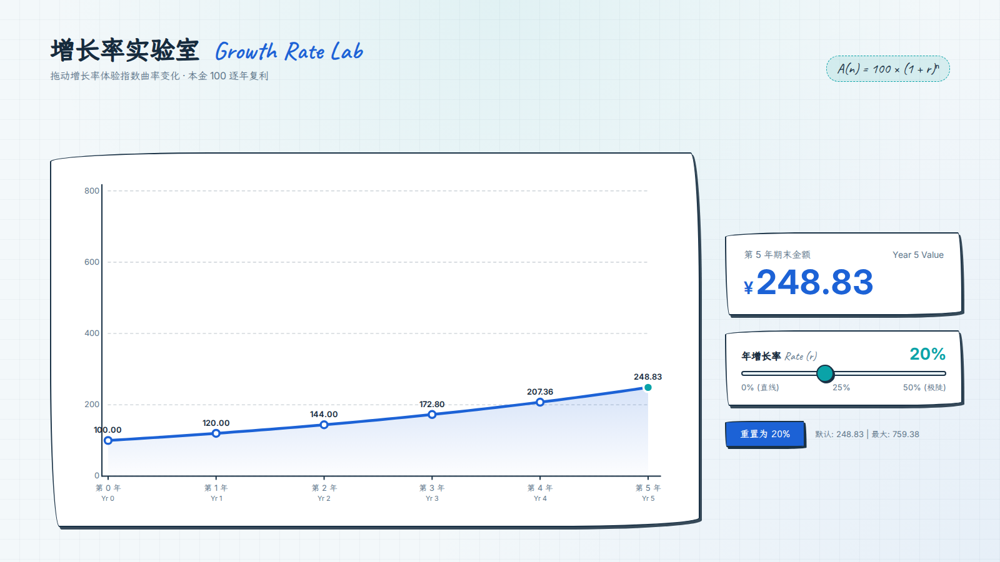
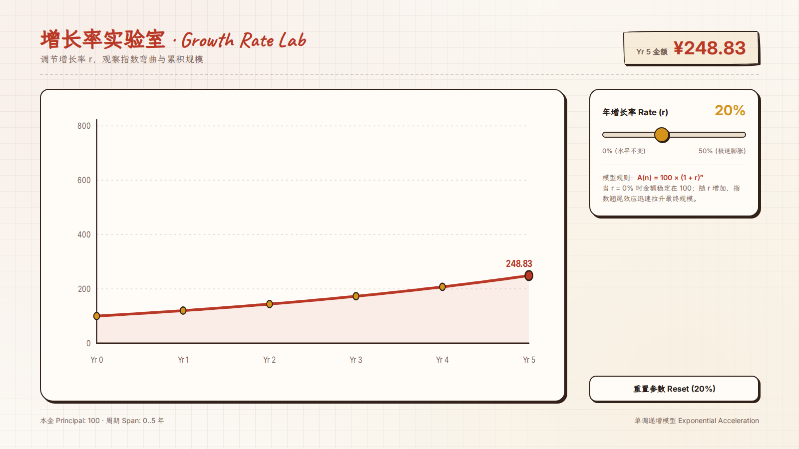
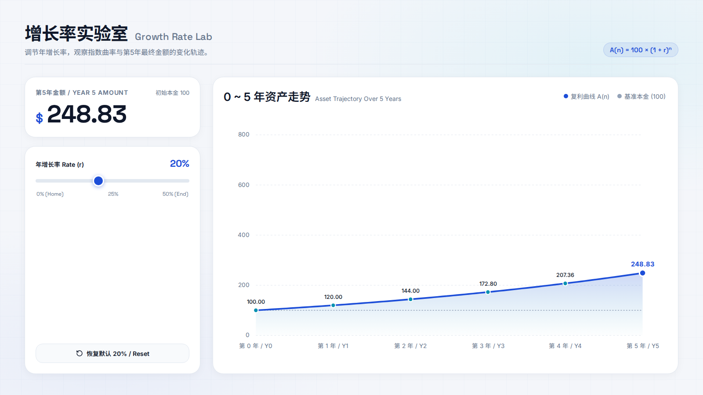
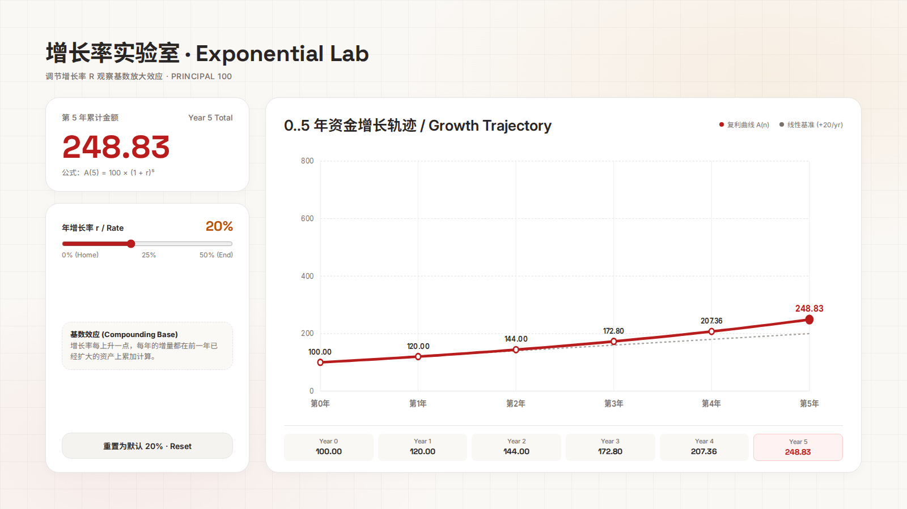

手绘 · 蓝青

手绘 · 砖红金（修改上一主题）

Bento · 蓝青

Bento · 砖红金（修改上一主题）

Gemini 3.8 Flash low；模型原始产物，未手工修页。不是四套完整讲义，也不代表自动选样多样性通过。
视觉验收未通过：两张 Bento 页仍使用通用白底 Paper；手绘页也有较重的包框。手绘主题改色时还改动了胶带宽度/旋转与部分阴影偏移。实验后澄清了“参考图和主题类不得豁免 Paper 禁令”以及“只换色不改非颜色声明”，未追加模型重跑，因此以下不是最后这两项文案修订后的生成结果。



